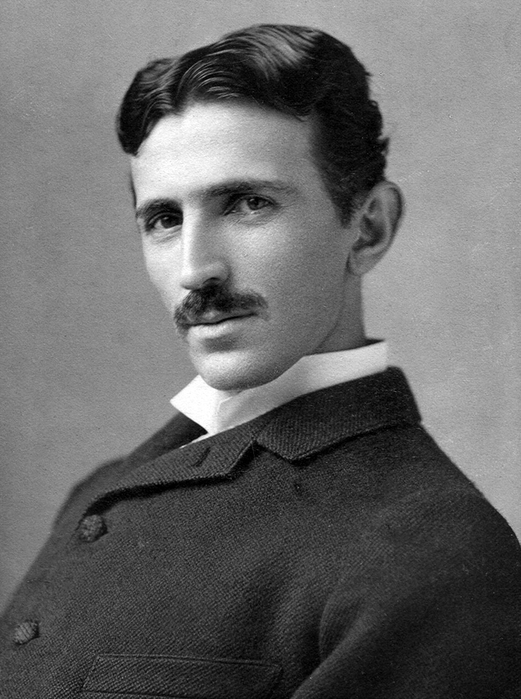
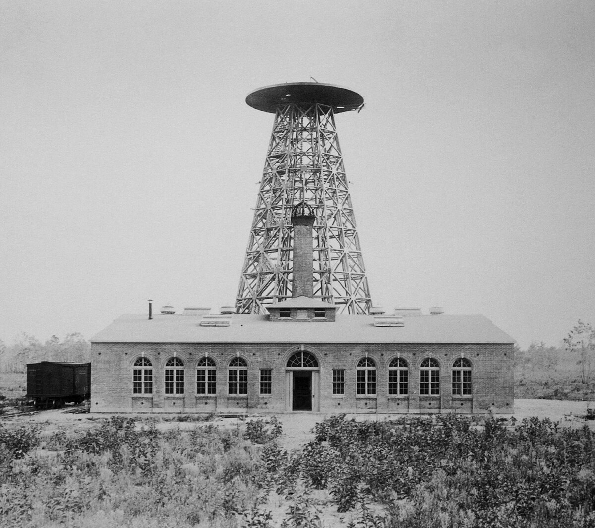
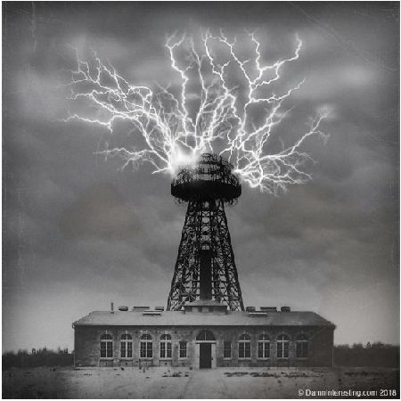

„Човекът, който изобрети XX век“

Никола Тесла е сръбско-австроунгарски-американски изобретател, физик и електромашинен инженер, известен най-вече с постиженията си в областта на променливия ток и електроснабдяването.
Никола Тесла е роден на 10 юли 1856 година в село Смилян в Австрийската империя (днес Хърватия) в семейство на сръбски православен свещеник. Учи в местни училища в Смилян и Госпич, а по-късно завършва гимназия в Карловац. По време на детството си губи по-големия си брат Дане при злополука по време на езда, което оказва голямо влияние върху него.
През 1873 г. тежко боледува от холера, лежи девет месеца прикован на легло и е близо до смъртта. Баща му обещава да го пусне да учи инженерство, ако се възстанови. Следващата година успява да избегне повикване за тригодишна служба в армията като бяга в гората в близост до Грачац, където го укриват роднини. Там той изследва планините, облечен като ловец и се възстановява здравето си.
Постъпва в Техническия университет в Грац през 1875 г., където се отличава с изключителни резултати. Към края на втората си година на следване той загубва стипендията си и се пристрастява към хазарта. По-късно възстановява загубите си, но не завършва университета.
През 1878 г. работи като помощник-инженер в Марибор, където преживява нервен срив. Впоследствие посещава Карловия университет в Прага, но веднага след смъртта на баща си отново прекъсва след един семестър. По време на този период Тесла чете много и запомня цели книги наизуст. Страда от халюцинации, свързани с миналото му и с изобретения, върху които работи.
През 1880 г. Тесла се премества в Будапеща, където става главен инженер в Националната телефонна компания и разработва подобрения на телефоните. През 1882 г. заминава за Париж, за да работи като електроинженер в „Континентъл Едисън Къмпани“. Там участва в изграждането на електростанции и разработва модела на асинхронен електродвигател, който демонстрира успешно в Страсбург. През пролетта на 1884 г. в Страсбург са завършени строителните работи и Тесла се завръща в Париж. Той очаква да получи обещаните му 25 000 долара премия, но разбирайки, че няма да получи парите, обиден и унижен, той подава оставка.
През юни 1884 г. Тесла се премества в Ню Йорк. По време на пътуването си, повечето му неща са откраднати и той е почти изхвърлен зад борда след избухване на бунт на кораба.
Започва работа при Томас Едисън в "Машината на Едисън". Постепенно получава предложение да препроектира напълно генераторите за постоянен ток в компанията. Тесла заявява, че може, и Едисън му обещава 50,000 долара, които така и не му дава дори след успеха му. В замяна му предлага 10 долара увеличение на седмичната заплата, в отговор Тесла напуска.
Основава компания за електрическо осветление, с помощта на група електротехници. Проектите на Тесла за използване на променлив ток не се насърчават, а групата по-късно ограничава дейността си до проект за дъгови лампи за улично осветление. Но след като Тесла отказва да приеме акции вместо пари за проекта, е дискредитиран от партньорите си.
През есента на 1886 до пролетта на 1887 изобретателят се занимава с копаене на канавки, и „спи където намери и яде каквото намери“. През април 1887 г. създава компанията „Тесла Къмпани Арк Лайт“, с помощта на приятеля си инженер Браун. За офиса на компанията в Ню Йорк, Тесла наема къща на Пето авеню в близост до сградата, заемана от Едисън. Между двете компании бушува конкуренция, известна в Америка под името войната на токовете. През юли 1888 г. бившият патентен агент на Едисън - Джордж Уестингхаус изкупува от Тесла повече от 40 патента.
Войната на токовете е период на остра конкуренция между постоянния ток на Томас Едисън и променливия ток, разработван от Никола Тесла и подкрепян от Джордж Уестингхаус. Едисън води публични кампании срещу променливия ток, представяйки го като опасен, включително чрез демонстрации с електрошокове върху животни и подкрепа за електрическия стол. В отговор Тесла провежда публични лекции, при които пропуска променлив ток през тялото си, за да докаже, че не е опасна. В крайна сметка системите на Тесла се доказват като по-ефективни и стават основа на съвременната електроенергийна мрежа.
На 13 март 1895 г. в лабораторията на Никола Тесла на Пето авеню избухва пожар, който унищожава сградата и най-новите му постижения, включително механичен осцилатор, методи за електрическо осветление, безжични комуникации и изследване на електричеството.
Тесла заявява, че може да възстанови всички открития по памет. С финансова помощ от Дружеството на Ниагарския водопад и Едуард Адамс е оборудвана нова лаборатория на улица „Хюстън“ 46.
През 1888 г. Тесла изобретява променливотоковия електродвигател и печели конкурса за електроцентралата на Ниагарския водопад, като по-късно Уестингхаус купува патентите му.
През май 1899 г. Тесла се премества в Колорадо Спрингс, където създава лаборатория за изследване на атмосферното електричество и безжичното предаване на енергия. Там провежда зрелищни експерименти с „бобината на Тесла“, при които се образуват волтови дъги до 5 метра с напрежение от порядъка на милиони волта и честота 150 000 херца, а гърмежите се чуват на 24 километра.
През 1900 г. Тесла започва проекта за кулата Уордънклиф с финансиране от Дж. Пиърпонт Морган, целяща безжично предаване на сигнали и енергия. След отказа на Морган от допълнително финансиране проектът пропада. През 1917 г. кулата е взривена поради военни опасения.


В последните си години Тесла живее самотно и с влошено здраве. След пътно произшествие получава белодробни усложнения и е прикован на легло. Умира от сърдечна недостатъчност в нощта на 7 срещу 8 януари 1943 г. в хотел „Ню Йоркър“. Тялото му е открито два дни по-късно, кремирано в Ню Йорк, а урната по-късно е пренесена в музея „Никола Тесла“ в Белград.
| Изобретение | Година | Описание |
|---|---|---|
| Система за променлив ток | 1887 г. | Mетод за производство, предаване и използване на електричество на дълги разстояния. |
| Радио | 1897 г. | Безжично предаване на информация чрез електромагнитни вълни |
| Дистанционно управление | 1898 г. | Устройство, което позволява контрол на механични или електронни системи от разстояние, без физическа връзка. |